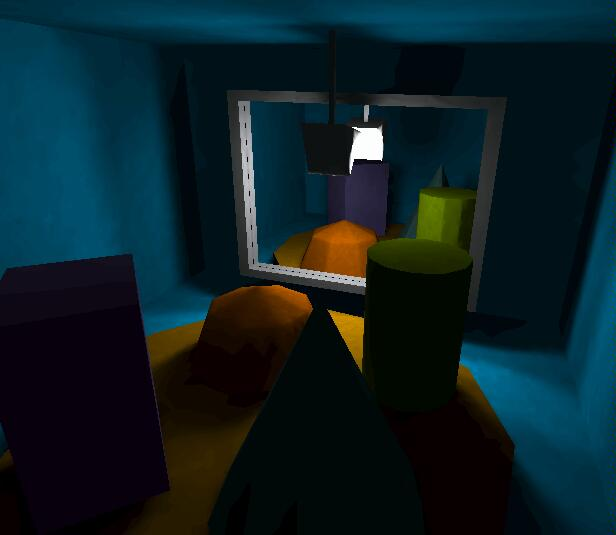

Cílem této práce je prozkoumat možnosti a implementovat
systém pro realtime zobrazování dynamických třírozměrných scén
s globálním osvětlením.
Kvalita výpočtu osvětlení by se měla řídit rychlostí hardwaru
tak, aby byl systém na úrovni své doby co nejdéle;
pokročilé a časově náročnější rysy by neměly systém zpomalovat
na pomalejším HW, s rostoucí rychlostí HW by měly generovat stále
realističtější obraz.
V plánu je implementace povrchů kombinujících ideálně matné a ideálně
lesklé (zrcadlové) odrazy, průhledných objektů, útlum světla
při průchodu prostředím, pohyb a libovolné změny objektů
včetně zdrojů světla.

(snímek v soutěži na obal journalu Eurographics 2001, umístění neznámé)

 2000,
Radiosita v dynamických scénách
2000,
Radiosita v dynamických scénách